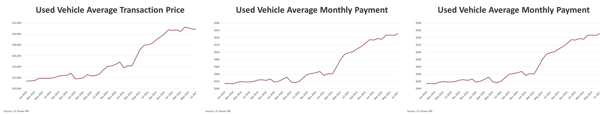

Due to market factors in the automotive industry, many consumers face difficulties purchasing used vehicles due to rising prices and information asymmetry with sellers. Since the past pandemic, geopolitical and supply chain issues and other electronic components have disrupted the supply of new and used vehicles over the past few years. In addition to this, economic conditions such as continued inflation and rising interest rates have caused the price of used cars to increase dramatically since the pandemic. The graph below shows that used vehicle prices have increased since COVID-19, with interest rates rising. It shows that the overall cost to the consumer to purchase a vehicle has also increased dramatically.
All of these situations have made consumers more cautious about their decisions to purchase vehicles, which means that consumers need to be careful when buying used cars to avoid overpaying for a vehicle and to ensure that the vehicle price is reasonable. Determining a vehicle price for a used vehicle can be very challenging for consumers. On the other hand, from the seller's point of view, consumers are often at a disadvantage because they have more vehicle expertise than the consumer.According to a study conducted by Biglaiser, Li, Murry, and Zhou (2018), information asymmetry is a significant issue in the used car market. The sellers often have more information about the quality of the car than the buyers, which can lead to market inefficiencies. To address this information imbalance, it is necessary to analyze various characteristics of the vehicle as well as external factors related to the purchase of the car to predict a more reasonable price for the consumer. This approach can prevent consumers from overpaying and help sellers sell their vehicles reasonably.
Most consumers shopping for used vehicles these days utilize online platforms such as CarGurus, Carmax, and Carvana. These platforms provide consumers with cars for sale and various attributes about the vehicle. Based on this information, consumers research their favorite cars, select a car, and ultimately communicate with the seller to discuss the vehicle's condition, negotiate a price, purchase terms, and make a final decision. However, most consumers need specialized car knowledge, so they will likely focus on their preferred vehicle characteristics within their budget and rely on the seller for other technical information. If consumers had insight into how each vehicle's characteristic affects its price, they would be better positioned to make a rational purchase. This project aims to provide such insights to consumers buying used cars. To accomplish this, data is first collected, including several vehicle characteristics such as year of manufacture, make and model, mileage, size, and price. Based on the collected data, an analysis is conducted to understand the relationship between various vehicle characteristics and how they impact vehicle prices in the used car market. Finally, different machine learning techniques are utilized to determine which vehicle characteristics significantly influence vehicle prices and to find a suitable model for predicting used vehicle prices. Through this project, the aim is to increase transparency in the used vehicle market and provide insights and information to help consumers make better decisions. It will improve consumer confidence in buying used vehicles and promote more rational consumption.
Can similar vehicles be grouped based on various characteristics such as size, body type, engine, etc? It can help narrow down the choices by quickly identifying vehicle segments that match the consumer's preferences when purchasing a vehicle. For example, clusters of low-cost cars with high mileage or high-cost vehicles with low mileage can be found.or high-cost vehicles with low mileage.
Discovering associations between different vehicle characteristics is possible? For example, particular makes and models of vehicles often have specific mileage ranges. These rules can provide insight into the vehicle characteristics that consumers prefer. For instance, if low-mileage cars and vehicles of a particular brand are frequently sold together, it could be interpreted as a sign that consumers prefer this combination. The associations found can also be used to predict specific characteristics of a vehicle, given other factors.
Can the characteristics of a vehicle be used to predict the price range of a car based on its features? For example, given a vehicle's make, model, year, mileage, and other characteristics, we examine whether the model can predict whether a vehicle's price falls within a specific range.
Can the model identify the key factors that strongly correlate with vehicle price? Understanding which vehicle characteristics and features impact pricing most can be helpful.
Determining the relative importance of various vehicle features is possible? Helping determine which attributes, such as engine size, transmission type, and interior options, impact price most.
What correlations exist between vehicle characteristics and prices in different regions? Identify regional differences in pricing trends and demand for specific features.
Does the climate of the region where a vehicle is sold affect the vehicle's characteristics that shape its price or the range of prices across the fleet? Depending on the climate, consumers' preferred vehicle characteristics may vary, affecting used vehicle prices.
Do luxury cars depreciate faster or slower than economy cars? Luxury cars have a higher cost of ownership and may depreciate faster, so understanding this can help buyers make an informed decision.
How does a car's maintenance history or accident history affect its resale value? Regular maintenance can extend the life of a car and help it retain its value, so a vehicle with a complete service history can fetch a higher price. In addition, an accident history can significantly reduce the value of a car, so it helps to determine a reasonable price for the vehicle.
How does the number of previous owners affect a car's resale value? Vehicles with fewer previous owners can command a higher price, which can influence a buyer's decision.